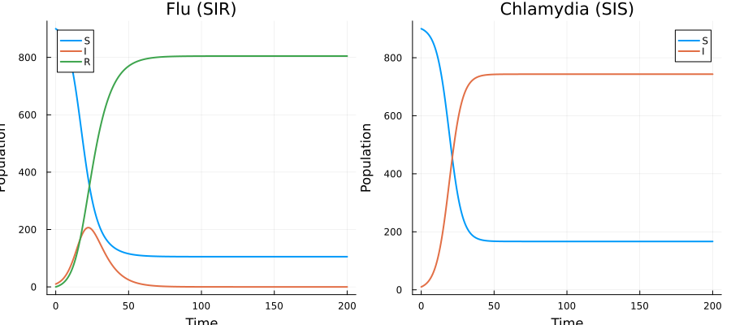
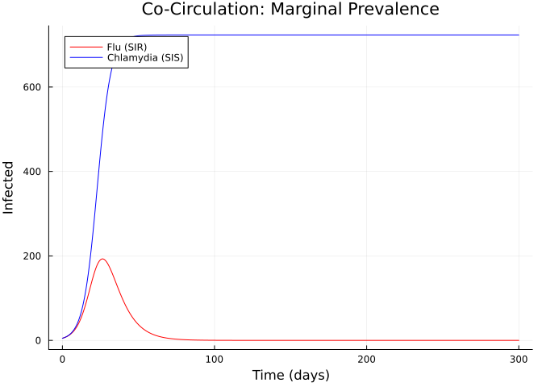
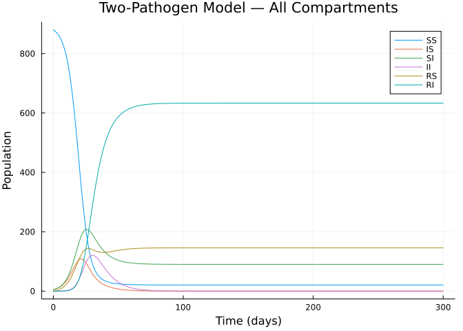
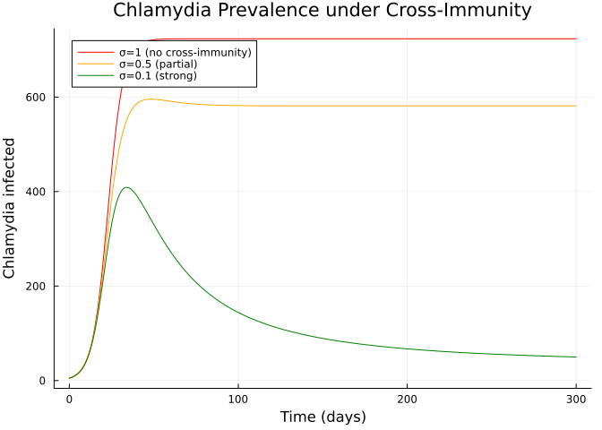
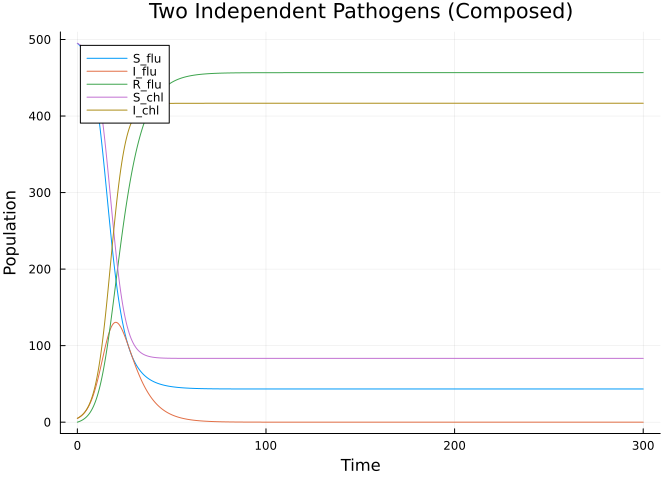
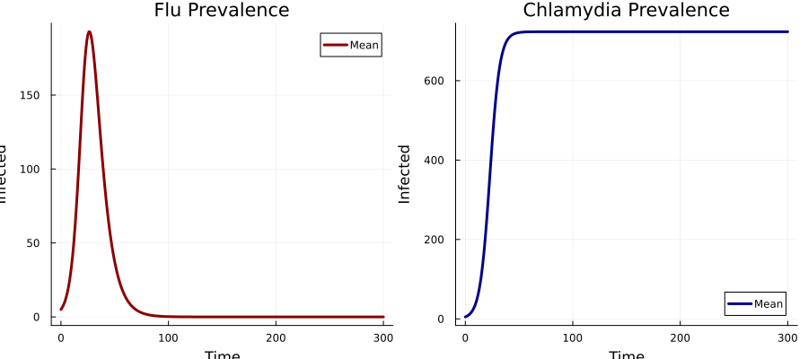

Multi-Pathogen Composition
Introduction
This vignette demonstrates how to compose two different disease models sharing a single host population using Odin.jl’s categorical extension. We model the co-circulation of:
- Influenza (SIR dynamics — epidemic with lasting immunity)
- Chlamydia (SIS dynamics — endemic, no lasting immunity)
The two pathogens share a susceptible pool: individuals susceptible to one pathogen may also be susceptible to the other. We then explore a cross-immunity coupling where recovery from one pathogen confers partial protection against the other.
Setup
using Odin
using Plots
using StatisticsDefining Individual Pathogen Models
Influenza (SIR)
flu = EpiNet(
[:S_flu => 900.0, :I_flu => 10.0, :R_flu => 0.0],
[:inf_flu => ([:S_flu, :I_flu] => [:I_flu, :I_flu], :beta_flu),
:rec_flu => ([:I_flu] => [:R_flu], :gamma_flu)]
)
println("Flu: ", species_names(flu), " — ", transition_names(flu))Flu: [:S_flu, :I_flu, :R_flu] — [:inf_flu, :rec_flu]Chlamydia (SIS)
chl = EpiNet(
[:S_chl => 900.0, :I_chl => 10.0],
[:inf_chl => ([:S_chl, :I_chl] => [:I_chl, :I_chl], :beta_chl),
:rec_chl => ([:I_chl] => [:S_chl], :gamma_chl)]
)
println("Chlamydia: ", species_names(chl), " — ", transition_names(chl))Chlamydia: [:S_chl, :I_chl] — [:inf_chl, :rec_chl]Independent Circulation (No Coupling)
First, simulate each pathogen independently:
# Flu alone
flu_gen = compile(flu; mode=:ode, frequency_dependent=true, N=:N,
params=Dict(:beta_flu => 0.4, :gamma_flu => 0.15, :N => 1000.0))
sys_flu = System(flu_gen, (beta_flu=0.4, gamma_flu=0.15, N=1000.0))
reset!(sys_flu)
times = collect(0.0:0.5:200.0)
r_flu = simulate(sys_flu, times)
# Chlamydia alone
chl_gen = compile(chl; mode=:ode, frequency_dependent=true, N=:N,
params=Dict(:beta_chl => 0.3, :gamma_chl => 0.05, :N => 1000.0))
sys_chl = System(chl_gen, (beta_chl=0.3, gamma_chl=0.05, N=1000.0))
reset!(sys_chl)
r_chl = simulate(sys_chl, times)
p = plot(layout=(1,2), size=(900, 400))
plot!(p, times, [r_flu[1,1,:] r_flu[2,1,:] r_flu[3,1,:]],
subplot=1, label=["S" "I" "R"],
title="Flu (SIR)", xlabel="Time", ylabel="Population", linewidth=2)
plot!(p, times, [r_chl[1,1,:] r_chl[2,1,:]],
subplot=2, label=["S" "I"],
title="Chlamydia (SIS)", xlabel="Time", ylabel="Population", linewidth=2)
p
Coupled Two-Pathogen Model
To model co-circulation in a shared population, we need to track the joint infection status. We build a full two-pathogen model manually with @odin, since composition of pathogens sharing the same host requires tracking individuals in all joint states (susceptible to both, infected with flu only, infected with chlamydia only, co-infected, etc.).
State Space
The joint states for two pathogens are:
| State | Flu status | Chlamydia status |
|---|---|---|
SS | Susceptible | Susceptible |
IS | Infected | Susceptible |
SI | Susceptible | Infected |
II | Infected | Infected |
RS | Recovered | Susceptible |
RI | Recovered | Infected |
(We track flu recovery but not chlamydia recovery since SIS returns to susceptible.)
two_pathogen = @odin begin
beta_flu = parameter(0.4)
gamma_flu = parameter(0.15)
beta_chl = parameter(0.3)
gamma_chl = parameter(0.05)
N = parameter(1000.0)
# Total infected with each pathogen (for force of infection)
total_I_flu = IS + II
total_I_chl = SI + II + RI
# Forces of infection
foi_flu = beta_flu * total_I_flu / N
foi_chl = beta_chl * total_I_chl / N
# SS: susceptible to both
deriv(SS) = -foi_flu * SS - foi_chl * SS + gamma_chl * SI
# IS: flu-infected, chl-susceptible
deriv(IS) = foi_flu * SS - gamma_flu * IS - foi_chl * IS + gamma_chl * II
# SI: flu-susceptible, chl-infected
deriv(SI) = foi_chl * SS - foi_flu * SI - gamma_chl * SI
# II: co-infected
deriv(II) = foi_flu * SI + foi_chl * IS - gamma_flu * II - gamma_chl * II
# RS: flu-recovered, chl-susceptible
deriv(RS) = gamma_flu * IS - foi_chl * RS + gamma_chl * RI
# RI: flu-recovered, chl-infected
deriv(RI) = gamma_flu * II + foi_chl * RS - gamma_chl * RI
initial(SS) = 880.0
initial(IS) = 5.0
initial(SI) = 5.0
initial(II) = 0.0
initial(RS) = 0.0
initial(RI) = 0.0
end
pars = (beta_flu=0.4, gamma_flu=0.15, beta_chl=0.3, gamma_chl=0.05, N=1000.0)
sys = System(two_pathogen, pars)
reset!(sys)
times = collect(0.0:0.5:300.0)
result = simulate(sys, times)
sn = [:SS, :IS, :SI, :II, :RS, :RI]6-element Vector{Symbol}:
:SS
:IS
:SI
:II
:RS
:RIMarginal Disease Prevalence
# Marginal flu prevalence
flu_infected = result[2, 1, :] .+ result[4, 1, :] # IS + II
chl_infected = result[3, 1, :] .+ result[4, 1, :] .+ result[6, 1, :] # SI + II + RI
p = plot(title="Co-Circulation: Marginal Prevalence",
xlabel="Time (days)", ylabel="Infected", linewidth=2)
plot!(p, times, flu_infected, label="Flu (SIR)", color=:red)
plot!(p, times, chl_infected, label="Chlamydia (SIS)", color=:blue)
p
All Compartments
p = plot(title="Two-Pathogen Model — All Compartments",
xlabel="Time (days)", ylabel="Population", linewidth=2)
for (i, name) in enumerate(sn)
plot!(p, times, result[i, 1, :], label=string(name))
end
p
Population Conservation
total = sum(result[:, 1, end])
println("Total population at t=300: $(round(total; digits=2)) (expected: 890.0)")Total population at t=300: 890.0 (expected: 890.0)Cross-Immunity Model
Now we add cross-immunity: recovery from flu gives partial protection (reduced susceptibility) against chlamydia:
two_pathogen_xi = @odin begin
beta_flu = parameter(0.4)
gamma_flu = parameter(0.15)
beta_chl = parameter(0.3)
gamma_chl = parameter(0.05)
sigma = parameter(0.5) # cross-immunity: 0=full, 1=none
N = parameter(1000.0)
total_I_flu = IS + II
total_I_chl = SI + II + RI
foi_flu = beta_flu * total_I_flu / N
foi_chl = beta_chl * total_I_chl / N
deriv(SS) = -foi_flu * SS - foi_chl * SS + gamma_chl * SI
deriv(IS) = foi_flu * SS - gamma_flu * IS - foi_chl * IS + gamma_chl * II
deriv(SI) = foi_chl * SS - foi_flu * SI - gamma_chl * SI
deriv(II) = foi_flu * SI + foi_chl * IS - gamma_flu * II - gamma_chl * II
# Cross-immunity: flu-recovered have reduced chlamydia susceptibility
deriv(RS) = gamma_flu * IS - sigma * foi_chl * RS + gamma_chl * RI
deriv(RI) = gamma_flu * II + sigma * foi_chl * RS - gamma_chl * RI
initial(SS) = 880.0
initial(IS) = 5.0
initial(SI) = 5.0
initial(II) = 0.0
initial(RS) = 0.0
initial(RI) = 0.0
endOdin.DustSystemGenerator{var"##OdinModel#284"}(var"##OdinModel#284"(6, [:SS, :IS, :SI, :II, :RS, :RI], [:beta_flu, :gamma_flu, :beta_chl, :gamma_chl, :sigma, :N], true, false, false, false, false, Dict{Symbol, Array}()))Comparing Cross-Immunity Levels
times = collect(0.0:0.5:300.0)
sigma_values = [1.0, 0.5, 0.1]
labels = ["σ=1 (no cross-immunity)", "σ=0.5 (partial)", "σ=0.1 (strong)"]
colors_xi = [:red, :orange, :green]
p = plot(title="Chlamydia Prevalence under Cross-Immunity",
xlabel="Time (days)", ylabel="Chlamydia infected", linewidth=2)
for (k, sigma) in enumerate(sigma_values)
pars_xi = (beta_flu=0.4, gamma_flu=0.15, beta_chl=0.3,
gamma_chl=0.05, sigma=sigma, N=1000.0)
sys_xi = System(two_pathogen_xi, pars_xi)
reset!(sys_xi)
r_xi = simulate(sys_xi, times)
# Chlamydia infected: SI + II + RI
chl = r_xi[3, 1, :] .+ r_xi[4, 1, :] .+ r_xi[6, 1, :]
plot!(p, times, chl, label=labels[k], color=colors_xi[k])
end
p
Cross-immunity from flu recovery significantly reduces the endemic level of chlamydia, demonstrating an indirect interaction between two otherwise independent pathogens.
Compositional Structure Diagram
The two-pathogen model can be understood as the composition of three conceptual sub-models:
┌─────────────┐ ┌──────────────┐ ┌──────────────────┐
│ Flu (SIR) │ │ Chl (SIS) │ │ Cross-immunity │
│ S→I→R │ ──▶ │ S→I→S │ ──▶ │ R_flu reduces │
│ │ │ │ │ Chl infection │
└─────────────┘ └──────────────┘ └──────────────────┘
│ │ │
└──── Shared population N ────────────────┘While the full joint-state model requires manual construction (the product state space is not simply the union of compartments), the categorical compose() function handles the simpler case where pathogens affect disjoint compartment sets:
# Demonstrate: composing disjoint pathogen models
flu_disjoint = EpiNet(
[:S_flu => 495.0, :I_flu => 5.0, :R_flu => 0.0],
[:inf_flu => ([:S_flu, :I_flu] => [:I_flu, :I_flu], :beta_flu),
:rec_flu => ([:I_flu] => [:R_flu], :gamma_flu)]
)
chl_disjoint = EpiNet(
[:S_chl => 495.0, :I_chl => 5.0],
[:inf_chl => ([:S_chl, :I_chl] => [:I_chl, :I_chl], :beta_chl),
:rec_chl => ([:I_chl] => [:S_chl], :gamma_chl)]
)
# No shared species → acts as two independent epidemics
two_independent = compose(flu_disjoint, chl_disjoint)
println("Independent composition:")
println(" Species: ", species_names(two_independent))
println(" Transitions: ", transition_names(two_independent))
gen_ind = compile(two_independent; mode=:ode, frequency_dependent=true, N=:N,
params=Dict(:beta_flu => 0.4, :gamma_flu => 0.15,
:beta_chl => 0.3, :gamma_chl => 0.05, :N => 500.0))
sys_ind = System(gen_ind, (beta_flu=0.4, gamma_flu=0.15,
beta_chl=0.3, gamma_chl=0.05, N=500.0))
reset!(sys_ind)
r_ind = simulate(sys_ind, times)
sn_ind = species_names(two_independent)
p = plot(title="Two Independent Pathogens (Composed)",
xlabel="Time", ylabel="Population", linewidth=2)
for (i, name) in enumerate(sn_ind)
plot!(p, times, r_ind[i, 1, :], label=string(name))
end
pIndependent composition:
Species: [:S_flu, :I_flu, :R_flu, :S_chl, :I_chl]
Transitions: [:inf_flu, :rec_flu, :inf_chl, :rec_chl]
Stochastic Co-Circulation
sys_stoch = System(two_pathogen, pars; n_particles=30, dt=0.25, seed=42)
reset!(sys_stoch)
times_s = collect(0.0:1.0:300.0)
r_stoch = simulate(sys_stoch, times_s)
p = plot(layout=(1,2), size=(900, 400),
title=["Flu Prevalence" "Chlamydia Prevalence"])
for pi in 1:30
flu_i = r_stoch[2, pi, :] .+ r_stoch[4, pi, :]
chl_i = r_stoch[3, pi, :] .+ r_stoch[4, pi, :] .+ r_stoch[6, pi, :]
plot!(p, times_s, flu_i, subplot=1, alpha=0.1, color=:red, label="")
plot!(p, times_s, chl_i, subplot=2, alpha=0.1, color=:blue, label="")
end
# Mean trajectories
flu_mean = vec(mean(r_stoch[2, :, :] .+ r_stoch[4, :, :], dims=1))
chl_mean = vec(mean(r_stoch[3, :, :] .+ r_stoch[4, :, :] .+ r_stoch[6, :, :], dims=1))
plot!(p, times_s, flu_mean, subplot=1, color=:darkred, linewidth=3,
label="Mean", xlabel="Time", ylabel="Infected")
plot!(p, times_s, chl_mean, subplot=2, color=:darkblue, linewidth=3,
label="Mean", xlabel="Time", ylabel="Infected")
p
Summary
| Approach | When to use | compose() applicable? |
|---|---|---|
| Disjoint pathogens | Different host species or compartments | ✅ Yes — no shared species |
| Shared population | Same host, independent dynamics | ⚠️ Requires joint state space |
| Cross-immunity | Recovery from one affects susceptibility to other | ⚠️ Requires explicit coupling |
The categorical compose() excels at combining disjoint sub-models. For pathogens sharing a host population, the joint state space model must be constructed manually, but the Petri net framework still helps reason about the structure.